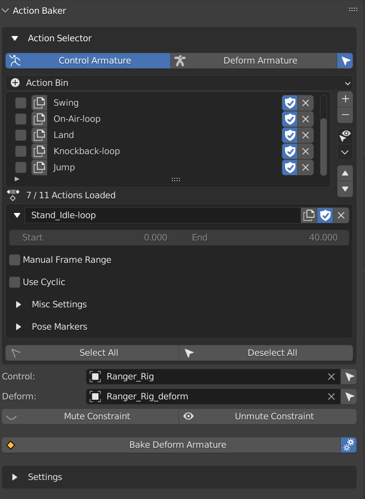
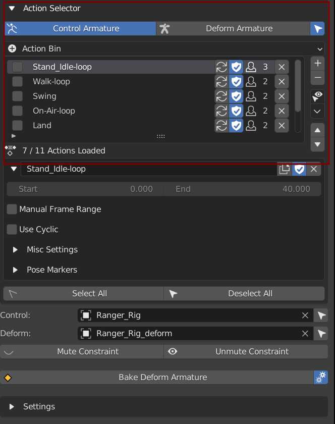
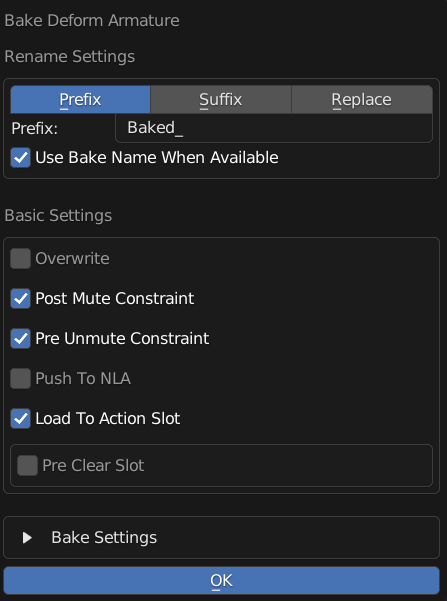
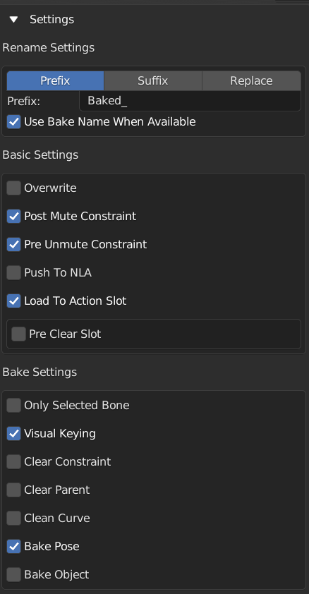

Action Baker
A Tool that Helps Bake Animation From Control Rig to Deform Rig using CGDive’s Workflow.
This Feature is Made to Work Together with Game Rig Tools and is similar to Game Rig Tool’s Action Bakery.
While It might have other application, this tool is Specifically Made for CGDive workflow, but the Frame Ranger way.
Note
The Difference between Game Rig Tools Action Bakery and Frame Ranger’s Action Baker is that it takes advantage of the Object Action Manager in Frame Ranger For Better Action Organization.
Action Selector
This Shows The Action List Of your Control Armature and Deform Armature for easy Access, the little select Icon Next to the Tab Allows Blender to Select the Armature When Switching Tabs
It Operates the Same as Object Action Manager, Except it is Placed More Conviniently Base on what you Input in Control Armature and Deform Armature
The Purpose of this is to Allow you to Select Action Without Finding the Object in the Scene, as well as inspect the deform armature’s action
Select All: Select All Action
Deselect All: Deselect All Action
Armature Input
Control Armature: Control Armature that Controls the Deform Armature
Deform Armature: Deform Armature that is Controlled by Control Armature, It is Usually Generated By Game Rig Tools From the Control Armature
Constraint
Mute Constraint: Mute All Constraint On Deform Armature, Free it From Control Armature
Unmute Constraint: Unmute All Constraint On Deform Armature, Making it Control by Control Rig Again
Bake Deform Armature
Start Baking Selected Actions
Check Below For Information About The Settings
Note
The Settings in the Popup is the Same As in the Panel, it just popup to make sure you check the settings before baking.
You can Disable the Popup by turn off the cog icon next to bake deform armature
Settings
Settings Used for Baking the Deform Armature
Rename Settings
Rename Mode: Method of Renaming Baked Action
Prefix: Prepend String A to the Action Name
Suffix: Append String A to the Action Name
Replace: Find String A And Replace with String B in Action Name
String A: Use For Prefix, Suffix, or Find
String B: Use For Replace, Only Appear in Replace Rename Mode
Use Bake Name When Available: Use Action’s Bake Name in Misc Settings if not empty
Basic Settings
Overwrite: Overwrite Action if the Target Action Name Exist
Post Mute Constraint: Mute Constraint On Deform Armature to Free its Control from Control Armature After Baking
Pre Unmute Constraint: Unmute Constraint On Deform Armature to Control by Control Armature so that the Movement is baked from control armature
Push To NLA: Push Action to NLA After Bake
Preclear NLA: Only Appear if Push to NLA
Skip Push if Exist: Skip on Pushing this action to NLA if it is already in NLA
Clear All NLA Track: Clear All NLA Track Before Baking
None: Do not Do Anything
Load to Action Slot: Load the Baked Action into Deform Armature’s Object Action Manager
Preclear Slot: Clear All the Slot of Deform Armature Before Loading the Animation
Bake Settings: Same Settings in the Bake Action Operator